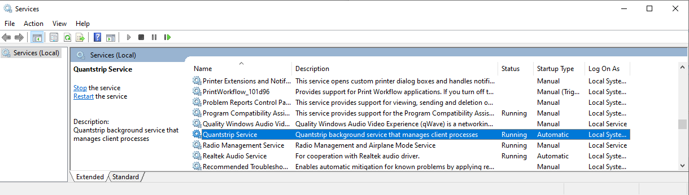
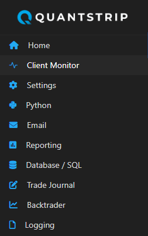

Overview
Quantstrip provides an execution platform for trading strategies and other long-running tasks on your local computer.
The system has three main parts:
- A Background Service running 24/7 (subject to the uptime of the local computer)
- A browser Dashbord with a set of apps
- A group of user defined Clients
graph TD
Dashboard["Dashboard"]
BackgroundService["Background Service"]
Client1["Client 1"]
Client2["Client 2"]
Client3["Client 3"]
Client4["Client ..."]
Client5["Client n"]
Dashboard <--> BackgroundService
BackgroundService --> Client1
BackgroundService --> Client2
BackgroundService --> Client3
BackgroundService --> Client4
BackgroundService --> Client5
The Background Service
The background process is a continuously running process that manages the connected clients. When installed on a local machine, the background process is set up as a scheduled task that starts on system startup. If the system restarts, the background process also restarts automatically but it is generally recommended that you configure your operating system so system restarts only take place outside active business hours.
The Quantstrip background services can be stopped and started manually in the Windows Service Manager.

The Dashboard
When the Background Service starts, it launches a local web server and a Dashboard page on http://127.0.0.1:8051. From the Dashboard you can reach a set of apps to configure and manage the system.

Clients
The connected clients contain the business logic for all the tasks managed by the system, like running a trading strategy or some other recurring job.

Clients are Python objects and to qualify as a Quantstrip client, each client object needs to implement the ClientBase base class that is part of the quantstrip API.
Design patterns and code examples are provided for a number of common client tasks. Below is an example of a minimal client that can be implemented with only 10 lines of Python code:
from quantstrip import ClientBase
import logging
logger = logging.getLogger(__name__)
class Client(ClientBase):
""" A minimal test client without broker connection.
This type of clients are used to do regular tasks
not related to trading, like end of day reporting etc.
"""
def __init__(self, *args):
super().__init__()
self.display_name = "My Client"
self.scheduler.every(5).seconds.do(self.job)
def job(self):
logger.info("Hello from My Client")
Datamodel
The Quantstrip database provides a datamodel to capture the post-trade process.